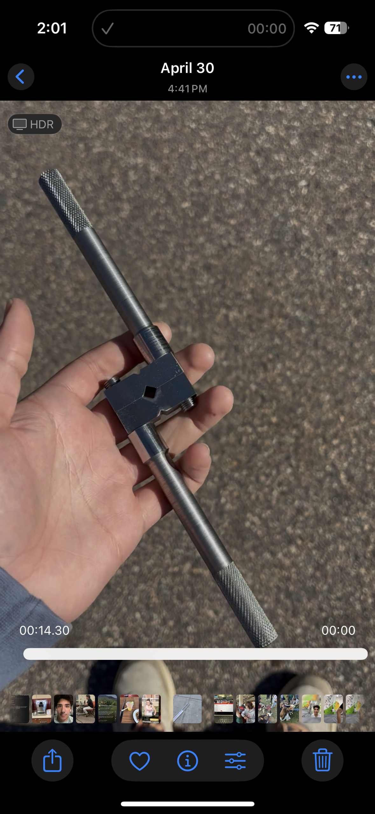

A precision-machined tap holder manufactured from raw metal stock, holding tolerances of ±0.001″ across all operations.
⚙ All critical dimensions held to ±0.001″ — measuring constantly, not just at the end.
Overview
I machined a tap holder from raw metal stock in my BU manufacturing class. It's a tool that holds taps in a milling machine, and the target was hitting all critical dimensions within ±0.001″.
Stock Preparation
Started by cutting round and square stock to rough length on the band saws. Clean cuts here matter — bad stock prep makes everything downstream harder.
Milling
Milled all flat surfaces to within a thousandth of an inch. Most of that comes down to workholding — if the part shifts at all, the tolerance is gone. I was measuring with micrometers and calipers after every operation.
Lathe Operations
Turned and threaded the round components on the lathe, holding the same ±0.001″. Threading is the least forgiving operation — the lead screw engagement has to be right or you get a bad thread and have to start over from scratch.
